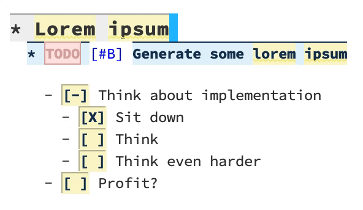

Emacs: moving to beginning of line
In stocks Emacs there is a function move-to-beginning-of-line which is bound
to C-a by default. It does exactly what its name implies - moves the cursor to
the beginning of line. In case of indented code this is usually not what I want,
but instead I would love to move the first visible character of line.

There are packages that does this and even more (for example, mwim), but if for some reason you don’t want to add one more package to your dependencies, or you care only about moving to the beginning of line, then you might grab the code that I share in the details. There is a version that also knows how to work with org mode headers and lists.

The implementation is pretty straight-forward. We just disable visual movement
and jump to first visible character using back-to-indentation and if we
didn’t change our location, then we move the beginning of line.
(defun +beginning-of-line (arg)
"Move point back to indentation of beginning of line.
Move point to the first non-whitespace character on this line. If
point is already there, move to the beginning of the line.
Effectively toggle between the first non-whitespace character and
the beginning of the line.
If ARG is not nil, move forward ARG lines first. If point reaches
the beginning or end of the buffer, stop there."
(interactive "P")
(when (numberp arg)
(let ((line-move-visual nil))
(forward-line arg)))
(let ((orig-point (point)))
(back-to-indentation)
(when (= orig-point (point))
(move-beginning-of-line 1))))
(global-set-key [remap move-beginning-of-line] '+beginning-of-line)Now when it comes to similar thing in org-mode, it’s more tricky. In some
sense, it’s adaptation o org-beginning-of-line, which doesn’t support desired
order of stop points, e.g. I want to stop at first meaningful character, then go
left to the first visible character and only then to the beginning of line.
(defun +org-beginning-of-line (arg)
"Move point back to indentation of beginning of line.
Move point to the first non-whitespace character on this line. If
point is already there, move to the beginning of the line.
Effectively toggle between the first non-whitespace character and
the beginning of the line.
When the point is on the heading, move to the beginning of title,
but after any TODO keyword or priority cookie. Repeated usage
moves to the beginning of the line.
When the point is on the bullet, first move to the beginning of
the item, but after bullet and check-box. Repeated usage
moves to the first non-whitespace character and then to the
beginning of the line.
If ARG is not nil, move forward ARG lines first. If point reaches
the beginning or end of the buffer, stop there."
(interactive "P")
(let ((origin (point)))
;; move to the beginning of line, so regexp lookups properly capture context
(when (numberp arg)
(let ((line-move-visual nil))
(forward-line arg)))
(beginning-of-line)
(cond
((let ((case-fold-search nil)) (looking-at org-complex-heading-regexp))
;; at the headline, special position is before the title, but after any
;; TODO keyword or priority cookie.
(let ((refpos (min (1+ (or (match-end 3) (match-end 2) (match-end 1)))
(line-end-position)))
(bol (point)))
(when (or (> origin refpos) (= origin bol))
(goto-char refpos))))
((and (looking-at org-list-full-item-re)
(memq (org-element-type (save-match-data (org-element-at-point)))
'(item plain-list)))
;; Set special position at first white space character after
;; bullet, and check-box, if any.
(let ((after-bullet
(let ((box (match-end 3)))
(cond ((not box) (match-end 1))
((eq (char-after box) ?\s) (1+ box))
(t box)))))
;; since we want proper rotation, we go back to the original point so
;; `bolp' works as expected
(goto-char origin)
(cond
((or (> origin after-bullet) (bolp))
(goto-char after-bullet))
((= origin after-bullet)
(back-to-indentation))
((= origin (point))
(move-beginning-of-line 1)))))
(t
(back-to-indentation)
(when (= origin (point))
(move-beginning-of-line 1))))))
(define-key org-mode-map (kbd "C-a") '+org-beginning-of-line)